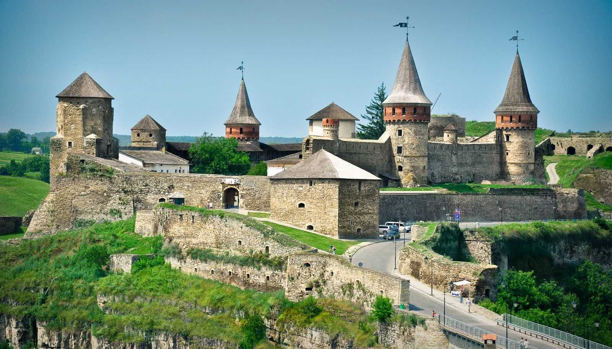
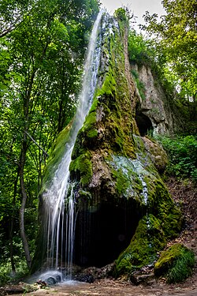
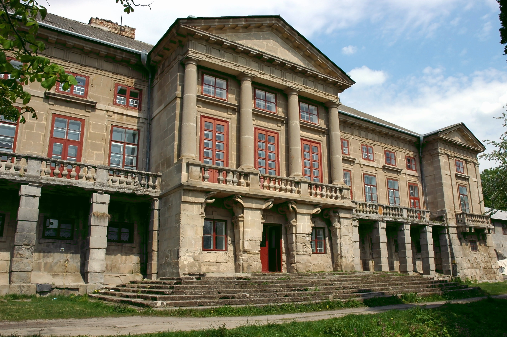
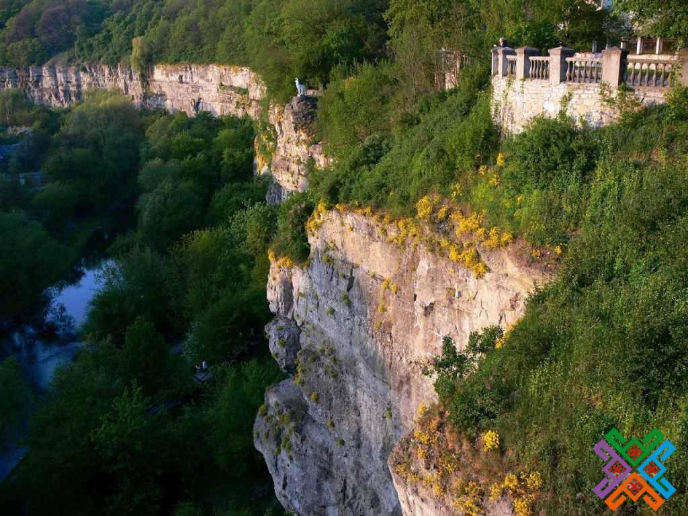

Кам'янець-Подільська фортеця
Фортеця була побудована у XIV столітті і стала важливим оборонним центром на півдні України. Її потужні стіни, вали та панорамні краєвиди роблять її одним із найвідоміших символів міста.
Історія та краса
У цьому регіоні поєднуються давня історія, природна краса та архітектурна спадщина. Нижче — шість місць, які варто побачити у подорожі по Кам'янець-Подільському краю.

Фортеця була побудована у XIV столітті і стала важливим оборонним центром на півдні України. Її потужні стіни, вали та панорамні краєвиди роблять її одним із найвідоміших символів міста.

Малієвецький водоспад — це мальовниче природне диво, яке приваблює туристів своєю красою та спокоєм. Він розташований серед лісистої місцевості, де вода падає зі скелі, створюючи величну й романтичну атмосферу.

Палац Орловських належить до найцікавіших архітектурних об'єктів регіону. Його вишукана архітектура і історія пов'язані з родиною, яка залишила помітний слід в культурному житті краю.

Вузькі вулички, старовинні будівлі, середньовічний характер і особлива атмосфера роблять старе місто одним із найулюбленіших місць для прогулок і фото.

Мальовничий природний ландшафт з високими берегами, річкою і віковою природою створює чудові умови для прогулянок, екскурсій і відпочинку на природі.